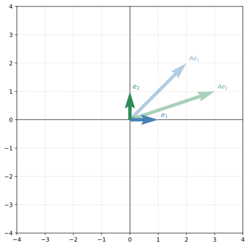
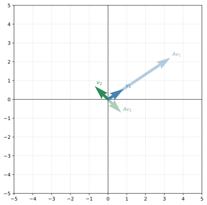
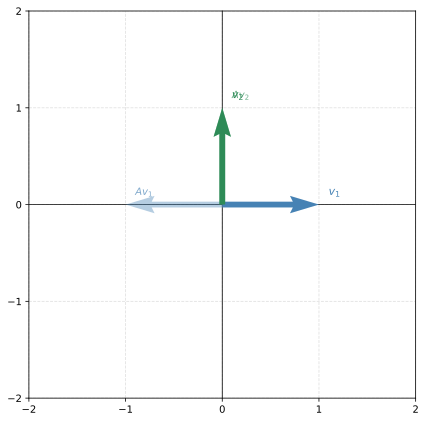
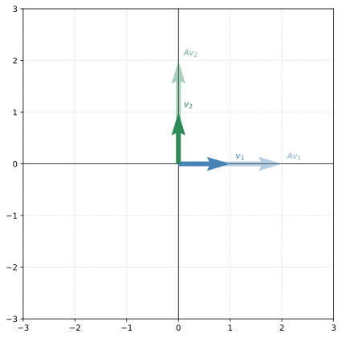
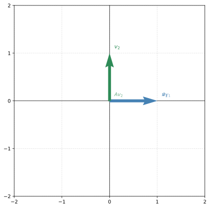

import numpy as np
import matplotlib.pyplot as plt
%config InlineBackend.figure_formats = ['svg']Lab: Interpreting Eigenvalues and Eigenvectors
linear-algebra
In the previous notes you learned what eigenvalues and eigenvectors are and how to compute them. In this lab you will practice finding them with Python…
In the previous notes you learned what eigenvalues and eigenvectors are and how to compute them. In this lab you will practice finding them with Python and build geometric intuition by exploring how standard transformations (reflection, shear, scaling, projection) relate to their eigenvectors.
Setup
Note
plot_transformation helper (expand to see implementation)
def plot_transformation(A, v1, v2, vector_name='v'):
"""Visualize a 2D transformation: show original vectors and their images under A."""
v1 = v1.flatten()
v2 = v2.flatten()
Av1 = A @ v1
Av2 = A @ v2
fig, ax = plt.subplots(1, 1, figsize=(6, 6))
# Original vectors (solid)
ax.quiver(0, 0, v1[0], v1[1], angles='xy', scale_units='xy', scale=1,
color='#4682B4', width=0.015, zorder=5)
ax.quiver(0, 0, v2[0], v2[1], angles='xy', scale_units='xy', scale=1,
color='#2E8B57', width=0.015, zorder=5)
# Transformed vectors (faded)
ax.quiver(0, 0, Av1[0], Av1[1], angles='xy', scale_units='xy', scale=1,
color='#4682B4', width=0.015, alpha=0.4, zorder=4)
ax.quiver(0, 0, Av2[0], Av2[1], angles='xy', scale_units='xy', scale=1,
color='#2E8B57', width=0.015, alpha=0.4, zorder=4)
# Labels
ax.text(v1[0]+0.1, v1[1]+0.1, f'${vector_name}_1$', fontsize=11, fontweight='bold', color='#4682B4')
ax.text(v2[0]+0.1, v2[1]+0.1, f'${vector_name}_2$', fontsize=11, fontweight='bold', color='#2E8B57')
ax.text(Av1[0]+0.1, Av1[1]+0.1, f'$A{vector_name}_1$', fontsize=10, color='#4682B4', alpha=0.7)
ax.text(Av2[0]+0.1, Av2[1]+0.1, f'$A{vector_name}_2$', fontsize=10, color='#2E8B57', alpha=0.7)
lim = max(abs(Av1).max(), abs(Av2).max(), abs(v1).max(), abs(v2).max()) + 1
lim = int(np.ceil(lim))
ax.set_xlim(-lim, lim)
ax.set_ylim(-lim, lim)
ax.set_xticks(range(-lim, lim+1))
ax.set_yticks(range(-lim, lim+1))
ax.set_aspect('equal')
ax.grid(True, linestyle='--', alpha=0.4)
ax.axhline(0, color='black', linewidth=0.8)
ax.axvline(0, color='black', linewidth=0.8)
plt.tight_layout()
plt.show()1. Eigenvalues and Eigenvectors: Definition and Interpretation
Consider the matrix \(A = \begin{bmatrix}2&3\\2&1\end{bmatrix}\). Let’s see what it does to the standard basis vectors:
A = np.array([[2, 3], [2, 1]])
e1 = np.array([1, 0])
e2 = np.array([0, 1])
print(f"A @ e1 = {A @ e1}")
print(f"A @ e2 = {A @ e2}")A @ e1 = [2 2]
A @ e2 = [3 1]plot_transformation(A, e1, e2, vector_name='e')
Both basis vectors changed direction. But what if we could find vectors that only get scaled (no direction change)?
Finding Eigenvalues and Eigenvectors with Python
Use np.linalg.eig() which returns (eigenvalues, eigenvectors):
A_eig = np.linalg.eig(A)
print(f"Eigenvalues: {A_eig[0]}")
print(f"\nEigenvector 1 (λ={A_eig[0][0]:.1f}): {A_eig[1][:,0]}")
print(f"Eigenvector 2 (λ={A_eig[0][1]:.1f}): {A_eig[1][:,1]}")Eigenvalues: [ 4. -1.]
Eigenvector 1 (λ=4.0): [0.83205029 0.5547002 ]
Eigenvector 2 (λ=-1.0): [-0.70710678 0.70710678]Let’s visualize: apply \(A\) to its own eigenvectors:
v1 = A_eig[1][:,0]
v2 = A_eig[1][:,1]
plot_transformation(A, v1, v2)
The first eigenvector gets stretched by a factor of 4 (its eigenvalue). The second gets flipped (eigenvalue = -1). Both remain parallel to their original direction. That’s what makes them eigenvectors.
2. Eigenvalues of Standard Transformations
2.1 Reflection About the \(y\)-axis
\[A_{\text{reflection}} = \begin{bmatrix}-1 & 0\\0 & 1\end{bmatrix}\]
A_reflection = np.array([[-1, 0], [0, 1]])
eig = np.linalg.eig(A_reflection)
print(f"Eigenvalues: {eig[0]}")
print(f"Eigenvector 1: {eig[1][:,0]}")
print(f"Eigenvector 2: {eig[1][:,1]}")Eigenvalues: [-1. 1.]
Eigenvector 1: [1. 0.]
Eigenvector 2: [0. 1.]plot_transformation(A_reflection, eig[1][:,0], eig[1][:,1])
The eigenvectors are the x-axis (\(\lambda = -1\), gets flipped) and the y-axis (\(\lambda = 1\), stays fixed). This makes geometric sense: reflecting about the y-axis reverses horizontal vectors and leaves vertical vectors unchanged.
2.2 Shear in the \(x\)-direction
\[A_{\text{shear}} = \begin{bmatrix}1 & 0.5\\0 & 1\end{bmatrix}\]
A shear slides layers of the plane horizontally. What are its eigenvectors?
A_shear = np.array([[1, 0.5], [0, 1]])
eig = np.linalg.eig(A_shear)
print(f"Eigenvalues: {eig[0]}")
print(f"Eigenvectors:\n{eig[1]}")Eigenvalues: [1. 1.]
Eigenvectors:
[[ 1.0000000e+00 -1.0000000e+00]
[ 0.0000000e+00 4.4408921e-16]]Both eigenvalues are 1 (repeated). The shear only has one independent eigenvector direction (the x-axis). Points on the x-axis don’t move under a horizontal shear, which matches \(\lambda = 1\). This is an example of a matrix that is not diagonalizable.
2.3 Identity and Uniform Scaling
The identity matrix \(I\) leaves every vector unchanged. What are its eigenvectors?
A_identity = np.array([[1, 0], [0, 1]])
eig = np.linalg.eig(A_identity)
print(f"Eigenvalues: {eig[0]}")
print(f"Eigenvectors (NumPy picks two, but ALL vectors are eigenvectors):\n{eig[1]}")Eigenvalues: [1. 1.]
Eigenvectors (NumPy picks two, but ALL vectors are eigenvectors):
[[1. 0.]
[0. 1.]]Every vector is an eigenvector of \(I\) with eigenvalue 1. NumPy just returns two (the standard basis), but any direction works.
What about scaling by 2 in all directions?
A_scaling = np.array([[2, 0], [0, 2]])
eig = np.linalg.eig(A_scaling)
print(f"Eigenvalues: {eig[0]}")Eigenvalues: [2. 2.]plot_transformation(A_scaling, eig[1][:,0], eig[1][:,1])
Again, every vector is an eigenvector (eigenvalue 2). Uniform scaling stretches everything equally, so no direction is “special.”
2.4 Projection Onto the \(x\)-axis
\[A_{\text{projection}} = \begin{bmatrix}1 & 0\\0 & 0\end{bmatrix}\]
This kills the \(y\)-component of every vector.
A_projection = np.array([[1, 0], [0, 0]])
eig = np.linalg.eig(A_projection)
print(f"Eigenvalues: {eig[0]}")
print(f"Eigenvector 1 (λ=1): {eig[1][:,0]}")
print(f"Eigenvector 2 (λ=0): {eig[1][:,1]}")Eigenvalues: [1. 0.]
Eigenvector 1 (λ=1): [1. 0.]
Eigenvector 2 (λ=0): [0. 1.]plot_transformation(A_projection, eig[1][:,0], eig[1][:,1])
Eigenvalue 1 for the x-axis (horizontal vectors are unchanged by projection). Eigenvalue 0 for the y-axis (vertical vectors get sent to zero). A zero eigenvalue means that direction collapses.
Summary
| Transformation | Matrix | Eigenvalues | Eigenvectors | Geometric meaning |
|---|---|---|---|---|
| Reflection (y-axis) | \(\begin{bmatrix}-1&0\\0&1\end{bmatrix}\) | \(-1, 1\) | \(x\)-axis, \(y\)-axis | Flip horizontal, keep vertical |
| Shear | \(\begin{bmatrix}1&0.5\\0&1\end{bmatrix}\) | \(1, 1\) | \(x\)-axis only | Only horizontal vectors stay put |
| Identity | \(I\) | \(1, 1\) | Everything | Nothing moves |
| Scaling (×2) | \(2I\) | \(2, 2\) | Everything | Everything doubles |
| Projection (x-axis) | \(\begin{bmatrix}1&0\\0&0\end{bmatrix}\) | \(1, 0\) | \(x\)-axis, \(y\)-axis | Keep horizontal, kill vertical |
The eigenvalues tell you the stretching factor. The eigenvectors tell you which directions experience that stretching. Together, they completely characterize what a linear transformation does.